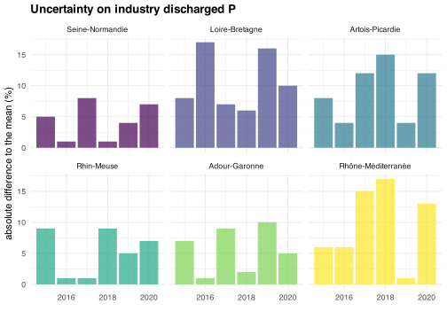

We create a file combining the different basins flows and ratios, for metropolitan France and for each basin. Since the Seine-Normandie basin data is only available for 2015, we also load the SIAAP data, containing 5 of the largest WWTP of Seine-Normandie, over a longer time period.
ggsave(#svg"graphs/N_basin_removal_efficiency_sensitive_zone.svg",dpi=1000, width=5, height=2.8, bg="white", create.dir = T )ggsave(#pdf"graphs/N_basin_removal_efficiency_sensitive_zone.pdf",dpi=1000, width=5, height=2.8, bg="white", create.dir = T )ggsave(#png"graphs/N_basin_removal_efficiency_sensitive_zone.png",dpi=1000, width=5, height=2.8, bg="white", create.dir = T )
Individual WWTP removal efficiency by size and sensitive zone
Code
all_WWTP_adour_garonne <-read_csv("output_data/all_WWTP/all_WWTP_05_adour_garonne.csv", #we have to specify the columns types, otherwise problems to combine basinscol_types =cols(INSEE_COM="numeric") ) %>%mutate(basin ="Adour-Garonne" )all_WWTP_rhin_meuse <-read_csv("output_data/all_WWTP/all_WWTP_02_rhin_meuse.csv", #we have to specify the columns types, otherwise problems to combine basinscol_types =cols(INSEE_COM="numeric") ) %>%mutate(basin ="Rhin-Meuse" )all_WWTP_loire_bretagne <-read_csv("output_data/all_WWTP/all_WWTP_04_loire_bretagne.csv", #we have to specify the columns types, otherwise problems to combine basinscol_types =cols(INSEE_COM="numeric") ) %>%mutate(basin ="Loire-Bretagne" )all_WWTP_seine_normandie <-read_csv("output_data/all_WWTP/all_WWTP_03_seine_normandie.csv", #we have to specify the columns types, otherwise problems to combine basinscol_types =cols(INSEE_COM="numeric") ) %>%mutate(basin ="Seine-Normandie" )all_WWTP_rhone_mediterranee <-read_csv("output_data/all_WWTP/all_WWTP_06_rhone_mediterranee.csv", #we have to specify the columns types, otherwise problems to combine basinscol_types =cols(INSEE_COM="numeric") ) %>%mutate(basin ="Rhône-Méditerranée" )all_WWTP_artois_picardie <-read_csv("output_data/all_WWTP/all_WWTP_01_artois_picardie.csv", #we have to specify the columns types, otherwise problems to combine basinscol_types =cols(INSEE_COM="numeric") ) %>%mutate(basin ="Artois-Picardie" )all_WWTP <-bind_rows( all_WWTP_adour_garonne, all_WWTP_rhin_meuse, all_WWTP_loire_bretagne, all_WWTP_seine_normandie, all_WWTP_rhone_mediterranee, all_WWTP_artois_picardie ) %>%mutate(NGL_yield = NGL_yield/100,Pt_yield = Pt_yield/100 )rm(all_WWTP_adour_garonne, all_WWTP_artois_picardie, all_WWTP_loire_bretagne, all_WWTP_rhin_meuse, all_WWTP_rhone_mediterranee, all_WWTP_seine_normandie)#order size categories for graph dispositionall_WWTP$PE_bin <-factor( all_WWTP$PE_bin, levels =c("0 - 200 PE", "200 - 2 000 PE", "2 000 - 10 000 PE","10 000 - 100 000 PE", "> 100 000 PE" ) )#order the basins for graph dispositionall_WWTP$basin <-factor( all_WWTP$basin, levels =c("Loire-Bretagne","Rhin-Meuse","Adour-Garonne", "Rhône-Méditerranée" ) )
Code
#we load the sanitation portal data to know if individual WWTP are in sensitive zones or notfile_sanitation_portal <-read_csv("output_data/all_WWTP/all_WWTP_sanitation_portal.csv") %>%#for 2018-2020 + exclude small WWTPfilter( Year>2017& Year<2021, PE_bin !="0 - 200 PE" ) %>%select( code_WWTP, N_sens, P_sens )#as there can be occasional misreporting concerning N and P sensitive zones, we take the most frequent value over the 3 yearsfile_sanitation_portal <- file_sanitation_portal %>%group_by(code_WWTP) %>%summarize (N_sens =names(which.max(table(N_sens))),P_sens =names(which.max(table(P_sens))) )#we take the mean N and P yields over 2018-2020temp <- all_WWTP %>%filter( NGL_yield>0, Pt_yield>0, #exclude incoherent yields Year>2017& Year<2021, #over 2018-2020 PE_bin !="0 - 200 PE", #exclude small WWTPis.na(PE_bin)==F, ) %>%group_by( code_WWTP, name_WWTP, basin, PE_bin, capacity ) %>%summarise(NGL_yield =round(mean(NGL_yield, na.rm=T), 2),Pt_yield =round(mean(Pt_yield, na.rm=T), 2) ) %>%filter(!basin %in%c("Seine-Normandie", "Artois-Picardie") )#merge yield file and sensitive area file, add colors for graphtemp <-left_join(file_sanitation_portal, temp, by="code_WWTP") %>%filter(is.na(basin)==F) %>%#colored if in sensitive area + large enough to be in decreemutate(N_sens_color =case_when( PE_bin %in%c("PE 200 - 2 000 PE", "2 000 - 10 000 PE") ~"grey", (PE_bin %in%c("10 000 - 100 000 PE", "> 100 000 PE") & N_sens =="oui") ~as.character(basin), T ~"grey" ),P_sens_color =case_when( PE_bin %in%c("PE 200 - 2 000 PE", "2 000 - 10 000 PE") ~"grey", (PE_bin %in%c("10 000 - 100 000 PE", "> 100 000 PE") & P_sens =="oui") ~as.character(basin), T ~"grey" ) )
f_sankey <-function(sankey){# nodes names for the sankey nodes <-data.frame(name=c(as.character(sankey$source), as.character(sankey$target)) %>%unique())# With networkD3, connection must be provided using id, not using real name like in the links dataframe. So we need to add it. sankey$IDsource <-match(sankey$source, nodes$name)-1 sankey$IDtarget <-match(sankey$target, nodes$name)-1# Colors groups (for nodes and flow links) nodes$group <-as.factor(c("nodes_group")) my_color <-'d3.scaleOrdinal() .domain(["excretion","large industries" ,"lost", "water", "sludge", "nodes_group"]) .range(["#7d6608" , "grey" , "#5e5e5e", "#2e86c1", "#6e2c00", "black"])'#to ba able to show decimales on the snkey graph# see here https://stackoverflow.com/questions/72129768/r-networkd3-issues# see also https://stackoverflow.com/questions/74259905/network-d3-sankey-node-value-too-precise-using-htmlwidgetscustomJS <-' function(el,x) { var link = d3.selectAll(".link"); var format = d3.formatLocale({"decimal": ".", "thousands": ",", "grouping": [3], "currency": ["", "\u00a0€"]}).format(",.1f"); link.select("title").select("body") .html(function(d) { return "<pre>" + d.source.name + " \u2192 " + d.target.name + "\\n" + format(d.value) + " " + "<pre>"; }); d3.select(el).selectAll(".node text") .html(function(d) { return d.name + " " + format(d.value) + " "; }); } '# Make the sankey p <-sankeyNetwork(Links = sankey, Nodes = nodes, Source ="IDsource", Target ="IDtarget",Value ="value", NodeID ="name", colourScale=my_color,fontSize=25, units ="", nodePadding =50,sinksRight = T, margin =c(top =0, right =0, bottom =0, left =0),LinkGroup="flow_group", NodeGroup="group" )onRender(p, customJS)}
f_sankey <-function(sankey){# nodes names for the sankey nodes <-data.frame(name=c(as.character(sankey$source), as.character(sankey$target)) %>%unique())# With networkD3, connection must be provided using id, not using real name like in the links dataframe. So we need to add it. sankey$IDsource <-match(sankey$source, nodes$name)-1 sankey$IDtarget <-match(sankey$target, nodes$name)-1# Colors groups (for nodes and flow links) nodes$group <-as.factor(c("nodes_group")) my_color <-'d3.scaleOrdinal() .domain(["excretion", "large industries", "lost", "water", "sludge", "air", "nodes_group"]) .range(["#7d6608", "grey", "#5e5e5e", "#2e86c1", "#6e2c00", "#3ab02a", "black"])'#to ba able to show decimales on the snkey graph# see here https://stackoverflow.com/questions/72129768/r-networkd3-issues# see also https://stackoverflow.com/questions/74259905/network-d3-sankey-node-value-too-precise-using-htmlwidgetscustomJS <-' function(el,x) { var link = d3.selectAll(".link"); var format = d3.formatLocale({"decimal": ".", "thousands": ",", "grouping": [3], "currency": ["", "\u00a0€"]}).format(",.1f"); link.select("title").select("body") .html(function(d) { return "<pre>" + d.source.name + " \u2192 " + d.target.name + "\\n" + format(d.value) + " " + "<pre>"; }); d3.select(el).selectAll(".node text") .html(function(d) { return d.name + " " + format(d.value) + " "; }); } '# Make the sankey p <-sankeyNetwork(Links = sankey, Nodes = nodes, Source ="IDsource", Target ="IDtarget",Value ="value", NodeID ="name", colourScale=my_color,fontSize=25, units ="", nodePadding =50,sinksRight = T, margin =c(top =0, right =0, bottom =0, left =0),LinkGroup="flow_group", NodeGroup="group" )onRender(p, customJS)}
ggplot(temp) +geom_col(aes(Year, abs_error_P_in, fill=basin), alpha=.7) +facet_wrap(vars(basin)) +scale_fill_manual(values = basin_colors, labels=basin_names, breaks=basin_names ) +theme(legend.position="none") +labs(x="", y="absolute difference to the mean (%)", title="Uncertainty on industry discharged P")

Code
ggplot(temp) +geom_col(aes(Year, abs_error_N_in, fill=basin), alpha=.7) +facet_wrap(vars(basin)) +scale_fill_manual(values = basin_colors, labels=basin_names, breaks=basin_names ) +theme(legend.position="none") +labs(x="", y="absolute difference to the mean (%)", title="Uncertainty on industry discharged N")